Open · Royalty-free · Local-first
Games, and everything around them, speaking one language.
Open Game Standards writes open, royalty-free standards for the connections between games and the hardware and software around them, and ships the tools to adopt them. Each side implements a standard once, and works with everything else that speaks it.
- DISCOVERY "OGS-TS Monitor demo" · schema 1 · 1 object · 4 channels
- MOTION 'demo_car' · yaw pitch roll · vehicle.speed · engine.rpm
- EVENT body.impact
Every connection is bespoke today
Games don't run in isolation. Around them sit peripherals, lighting, streaming and overlay tools, accessibility devices, companion apps and simulation hardware, all of which work better when they can talk to the game. Today almost every one of those connections is built game by game, or tied to a single vendor's ecosystem.
Developers support each device separately, device makers chase each game separately, and players get whatever happens to have been wired up.
How we build standards
Every OGS standard is built the way the Telemetry Standard was.
-
Open and royalty-free
MIT licensed, free for anyone to implement, from hobbyists to hardware vendors.
-
Local-first
Standards run between devices the player owns. No cloud, no account, nothing leaves the player's network.
-
Adoptable on day one
Each standard ships with SDKs for the major engines and a reference implementation, so adding it is a small job, not a project.
-
Proven, not promised
A conformance corpus every implementation is tested against, and validation against real games before it's called done.
-
Developed in the open
Design discussion, validation evidence and the specifications themselves are public.
Standards

OGS Telemetry Standard (OGS-TS)
Live game telemetry to motion platforms, haptics, dashboards and loggers.
Propose a standard
If games and the devices around them keep solving the same integration problem one game at a time, that's a candidate. Bring the problem and the evidence to Discord.
OGS Telemetry Standard
Motion rigs, haptic vests and instrument dashboards all need the same thing from a game: what the player's vehicle or character is doing, moment to moment. OGS-TS lets a game describe itself once, on the local network, so every device listening understands it.
Three frames, one multicast group
-
DISCOVERY
Every two seconds
The game, its objects, and a dictionary of channels, each declared once with a name, type, unit and range.
-
MOTION
At the game's telemetry rate
The bare samples, keyed by the ids from discovery. A pose-only frame is about 70 bytes.
-
EVENT
When they happen
Impacts, gunfire and other stimuli, with replay and deduplication so a lossy network can't drop them.
- Read-only so it can't be used to cheat.
- Local: it never leaves the player's network.
- Extensible: games declare their own channels; receivers skip what they don't recognise.
- Precise: units, axes and signs settled once in CONVENTIONS.md.
How it fits together
Sources
239.255.17.17:40123
local network only
Receivers
Evidence, not promises
Proven in shipped games through the loader mods, with no changes to the games: Subnautica Below Zero, Hyper Storm, Exo One, Sable, Hot Wheels Unleashed, The Gunk, Stray and RoboCop: Rogue City.
Find your starting point
Pick what describes you.
ogs-ts-unity
Add a publisher component and bind your values. Plain C# source with no precompiled assemblies; runs on Mono and IL2CPP. Add the package to Packages/manifest.json, pinned to a release:
"com.ogs.telemetry.unity": "https://github.com/Open-Game-Standards/ogs-ts-unity.git#v0.4.0"Then add OGS-TS/Telemetry Publisher to your vehicle and declare your channels in code.
ogs-ts-unreal
A plugin with no third-party dependencies. Drop it into your project's Plugins/ folder, enable it, add TelemetryPublisher to your vehicle, then in BeginPlay:
auto Handle = Telemetry->DeclareChannel(TEXT("engine.rpm"), TEXT("rpm"), 0, 9000, true);
Telemetry->BindChannelRaw(Handle, [this]{ return Engine->Rpm; });ogs-ts-godot
An addon with a publisher node. Copy addon/ogs_telemetry/ into your project as addons/ogs_telemetry/, then enable OGS Telemetry (OGS-TS) under Project Settings > Plugins. Nothing needs adding to your game's csproj.
ogs-ts-dotnet
The engine-agnostic core every C# plugin is built on: the sender, the publisher with declare/bind/push wiring, and bind-time unit conversion, with no third-party runtime dependencies.
ogs-ts-dotnet, then IMPLEMENTING.md
The receiving library and a reference receiver. With any OGS-TS game running on your network, see the stream:
git clone https://github.com/Open-Game-Standards/ogs-ts-dotnet
cd ogs-ts-dotnet
dotnet run --project src/TelemetryReceiveThe reference receiver prints the game's channel declarations, live motion and events, and flags anything that doesn't conform.
The standard
The schema, the encoding rules and a conformance corpus to test against. Every implementation must produce byte-identical output for the same frame, so the corpus tells you exactly when you're done.
A loader mod
OGS-TS for Unity and Unreal Engine games that don't ship it, with no changes to the game. Each mod loads through an established mod loader (BepInEx, UE4SS or UEVR), finds the pawn the player controls, and publishes its motion.
OGS-TS Bridge
Translates the telemetry games already emit (Forza, F1, Assetto Corsa, Microsoft Flight Simulator and more) into OGS-TS, so OGS devices work with them today.
GameConn
Receives OGS-TS from any game on the network and drives motion platforms and haptics through plugins, with per-game profiles.
Implementations
Every SDK is plain source with no third-party runtime dependencies, so it builds wherever its engine builds: Windows, Linux, macOS, ARM, and ahead-of-time platforms such as IL2CPP.
-
OGS-Telemetry-Standard
The specification, schema, conventions, validation and conformance corpus.

-
ogs-ts-dotnet
.NET reference implementation: sender core, receiving library, reference receiver.

-
ogs-ts-unity
Unity package (2022.3+ and Unity 6).

-
ogs-ts-unreal
Unreal Engine plugin.

-
ogs-ts-godot
Godot 4 (.NET) addon.

-
Motion-Telemetry-Documentation
Background on motion telemetry concepts.
Loader mods and apps
Built on OGS-TS by the founder under @BrianGilbert, released from CI on every change.
Loader mods
| Mod | For | Loads through | Validated in |
|---|---|---|---|
| bepinex-ogs-ts | Unity games, Mono and IL2CPP | BepInEx 5 (Mono), BepInEx 6 (IL2CPP) | Subnautica Below Zero, Hyper Storm, Exo One, Sable |
| ue4ss-ogs-ts | Unreal Engine 4 and 5 games | UE4SS | The Gunk, Stray, Hot Wheels Unleashed, RoboCop: Rogue City |
| uevr-ogs-ts | Unreal Engine 4 and 5 games in VR | UEVR | The Gunk, Stray, RoboCop: Rogue City |
Help with the mods is on the mod support server.
Apps
-
In development
OGS-TS Bridge
Translates the telemetry games already emit into OGS-TS: Forza Horizon and Motorsport, F1, DiRT Rally 2.0, DiRT 4, WRC, Project CARS, Automobilista 2, Assetto Corsa, ACC, BeamNG.drive, Live for Speed, and Microsoft Flight Simulator 2020 and 2024 over SimConnect with about 110 channels. It detects the running game automatically and adds tens of microseconds of latency.
-
In development
GameConn
Receives OGS-TS from any game on the network and drives hardware through plugins: Yaw motion simulators, DOF Reality platforms and audio exciters so far, with per-game profiles. Built cross-platform, targeting at least Windows and Linux, with the aim that sponsorship keeps it free.


Get involved
- Talk to us on Discord.
- Propose a standard. Bring the problem and the evidence to Discord.
- Improve an existing one. Shared channel names live in the Common Channels annex; new entries need evidence from at least two games.
- Contribute issues and pull requests to any repository.
- Sponsor the work. It moves everything here forward: the standards and their SDKs, the loader mods, OGS-TS Bridge and GameConn.